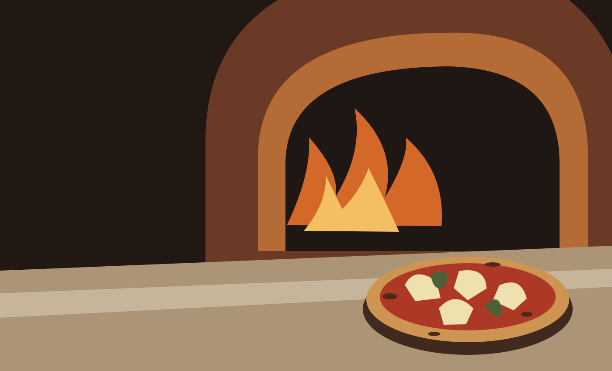

COLLECTION
Proposed 10% off collection orders. Phone to confirm prices, availability and an approximate twenty-minute preparation time.
Call to enquire ↗
BRISTOL · WOOD-FIRED · 48-HOUR DOUGH
A small Neapolitan pizzeria on Gloucester Road. Twelve pizzas, four wines, and no pasta. We would rather do one thing properly.
Book a Table ↗See the Menu ↓THE DOUGH
We mix with Caputo 00, sea salt, water and a small amount of yeast, then leave it alone for two days at a controlled temperature. Long fermentation gives the crust its lightness and its blisters.
It also means we sometimes run out on a Saturday, and we would rather do that than rush it.
Recipe story supplied for this restaurant concept.
MAKE AN EVENING OF IT
Tables for up to six. Groups of seven or more, please call. A third of the proposed room is kept for walk-ins. Come early and try your luck at the counter.
This form checks a local enquiry only. No table is held, no live availability is checked and no details are sent.
AT HOME IS GOOD TOO
Proposed 10% off collection orders. Phone to confirm prices, availability and an approximate twenty-minute preparation time.
Call to enquire ↗Example two-mile radius, Tuesday to Sunday until 21:45, £3 flat. Hours and delivery cut-off need direct confirmation.
Direct contact supports the kitchen. App listings and fees are not verified in this concept.
No pizzas selected. Add one from the menu.
Example total £0.00
Local estimate only; prices, discounts and allergens require confirmation. No payment or order is placed.
AROUND THE TABLE / SUPPLIED CONCEPT QUOTES
“The Diavola with the honey is a genuinely stupid combination that works perfectly and I think about it at odd hours.”BEN H.
“Sat next to the oven, watched every pizza go in. Best seats in the place.”PRIYA S.
“Twelve pizzas on the menu and no pasta. You can taste the confidence.”MAREK L.
FIND US
184 Gloucester Road, Bristol BS7 8NT
Tue–Thu 17:00–22:00
Fri–Sat 12:00–23:00
Sun 12:00–21:00 · Mon closed
Concept location and hours. Street parking after 18:00 and the 75 bus are supplied copy; confirm travel restrictions locally.